Photo stories 2
Golden Week and beyond
In Japan, public holidays are essential and numerous. Compared to New Zealand, it seems people take their work way too seriously; although Japanese people are allowed to take paid holidays, people who don’t tend to get promoted faster and get on better with their colleagues (who won’t have to take up the slack while the person is away). Because of this, many people don’t take holidays at all unless they’re actually mandatory.
So for many people Golden Week is the longest holiday they get all year — it’s formed by the combination of four public holidays (April 29th and May 3-5th) and it is busy. I planned to go to a whole lot of places (art galleries, museums, shrines) but I ended up giving up on that idea because everywhere was just too crowded.
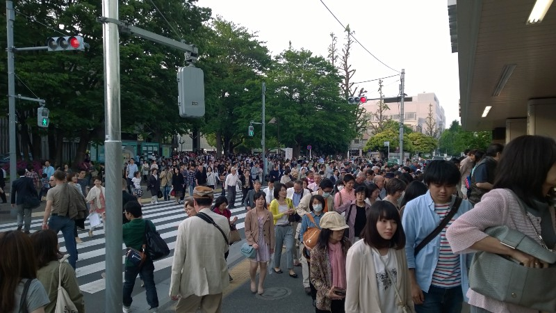This was one of the times I found a clear space large enough to actually take a photo …
Still, I managed to go to a few places, and also went on a trip to Hakone (a lake in the mountains southwest of Tokyo) last weekend. I haven’t had the time or energy to write anything for the past couple of weeks, and to be honest I don’t feel like writing much now either, so here’s my backlog of photos from that period …
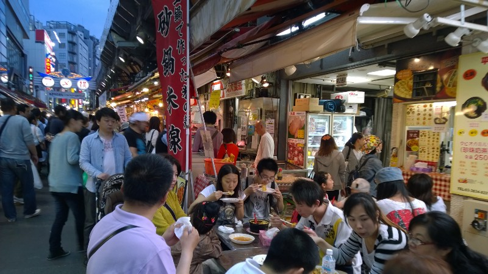Ueno: A place famous for museums and art galleries, but also for back streets (yokocho) which remind me of Hong Kong more than anything else
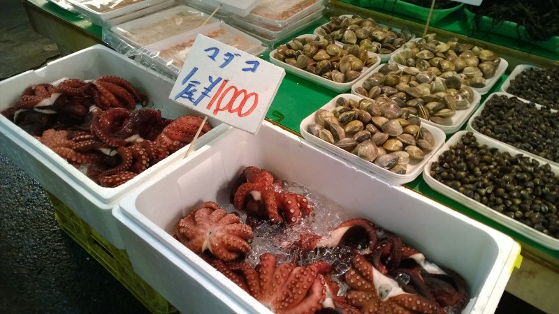Yeah, apparently you can buy a whole octopus for about $10
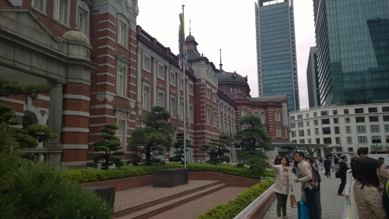Bit of a sudden jump, but this is Tokyo Station a couple of days later
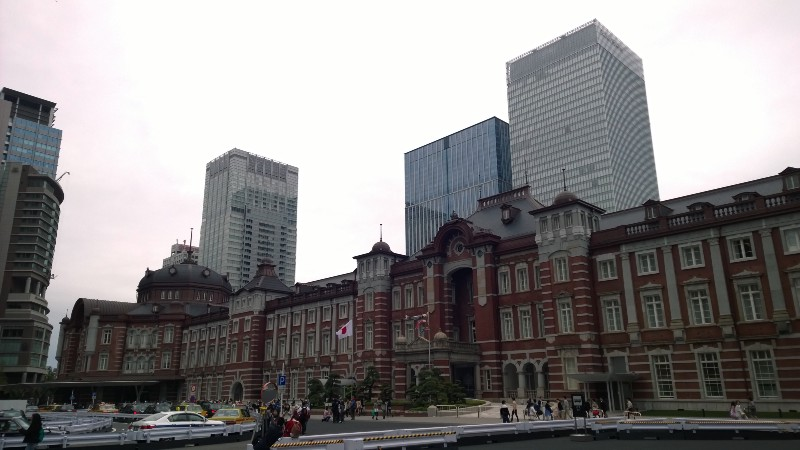It’s impressive, but it looks rather out of place next to all the skyscrapers of central Tokyo
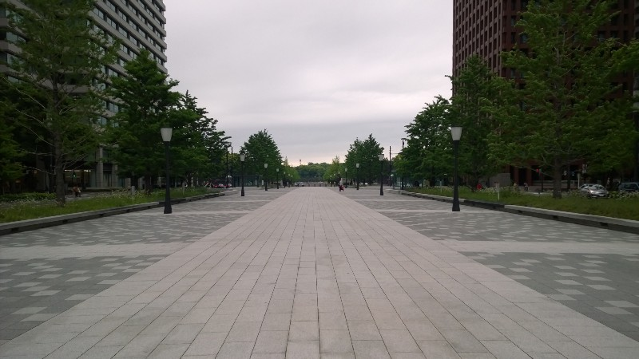The one time I needed people for a sense of scale, no one was there. Take my word for it, this is a forbiddingly wide path to the Imperial Palace
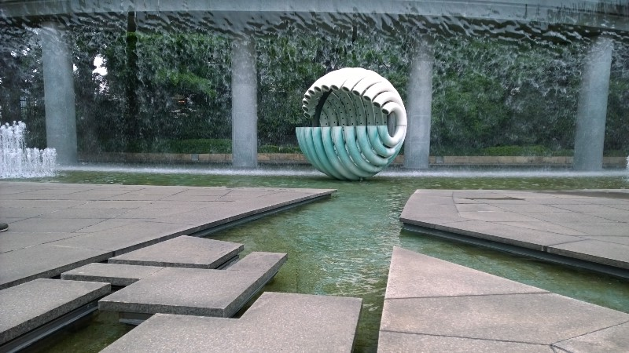Before you get there, however, there’s a hotel with a rather fun watery bit outside. I believe this is what they call a “park” … seriously though, it’s a pretty cool mix of modernism and Zen principles
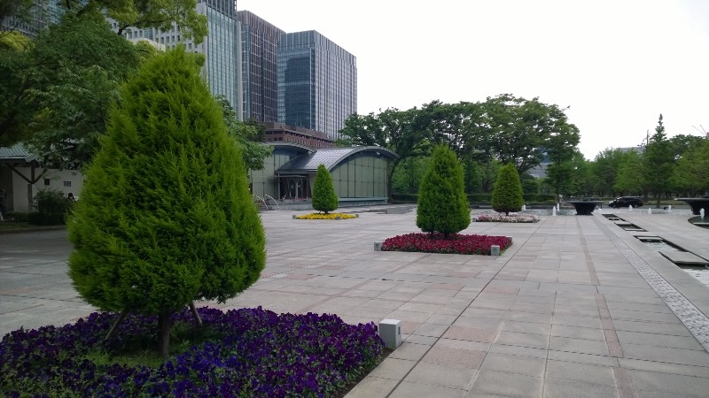I rather enjoyed the colours of the flowers — it made me realise there’s far too much grey here
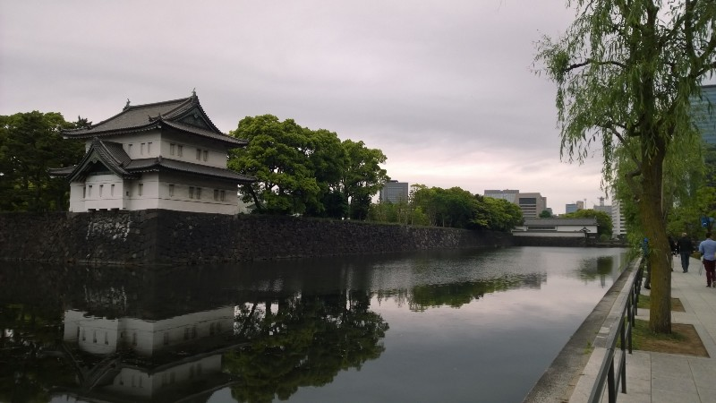Annoyingly, this is about as much of the palace as you can see from the outside — or so I thought
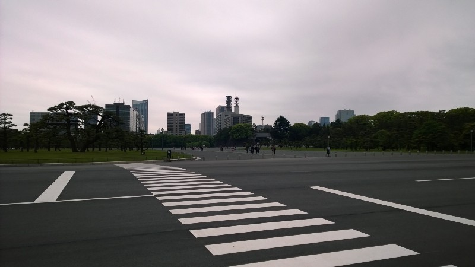It’s weird seeing this much flat, empty space … apparently the palace isn’t a popular holiday destination, although the weather was a bitter final taste of winter
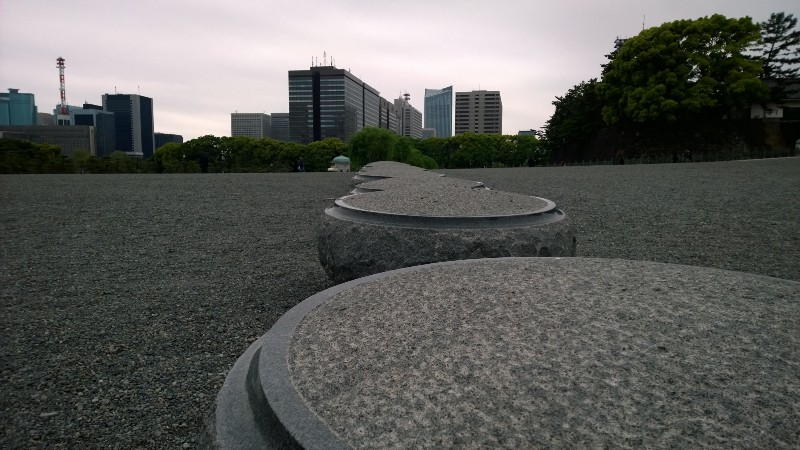Yeah, sometimes I find bollards more interesting than palaces. Get over it
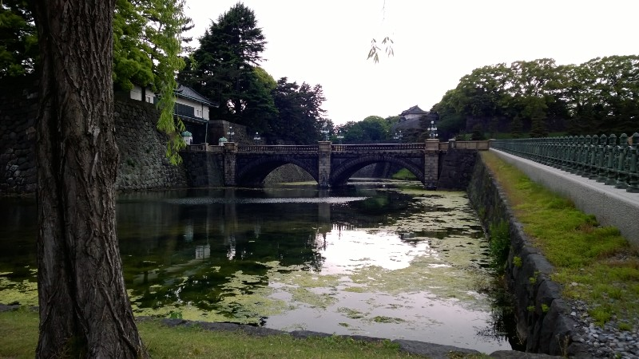Now this is nice …
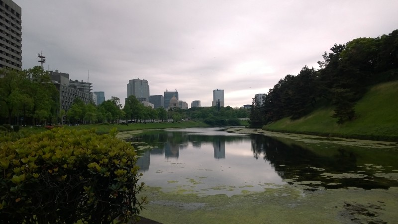And this is nice as well. I would have loved to see inside the palace grounds, but it’s not a public place at all
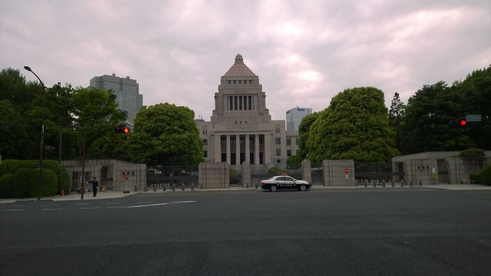For the most part, Tokyo’s government buildings are supremely uninteresting. The Diet (Parliament) building is an exception
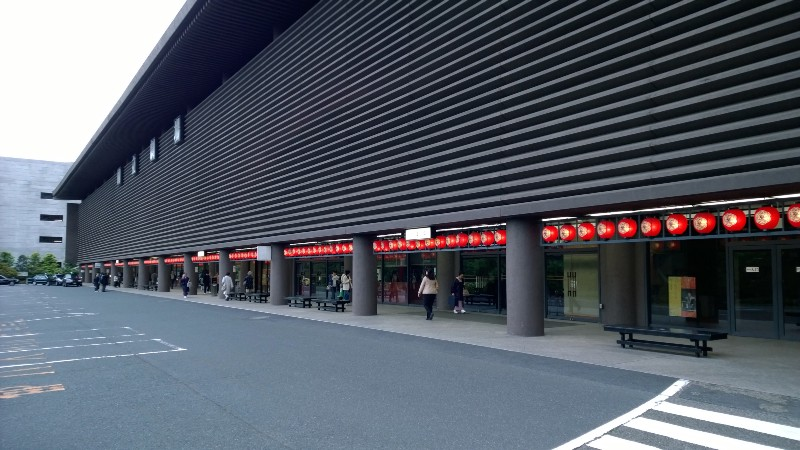And this is the national theatre. It seems a strangely uninteresting design for something that’s supposed to be a centre for the arts
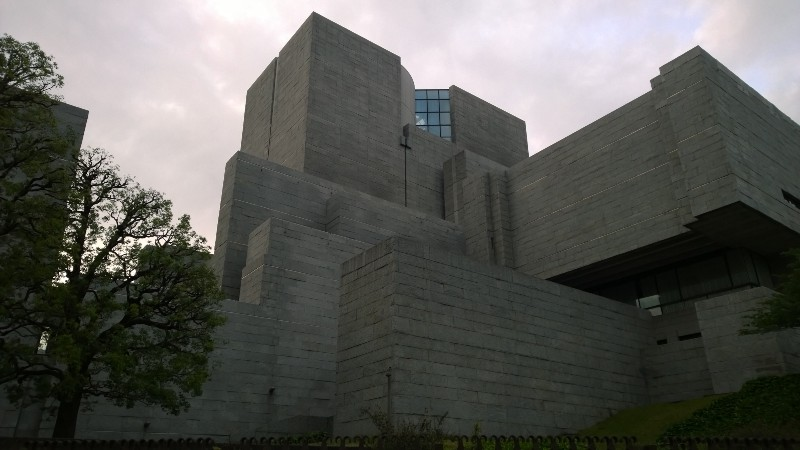The Supreme Court, on the other hand, is a fascinating piece of design. Unfortunately you can’t see it from any decent angles because the public isn’t allowed past the main gates
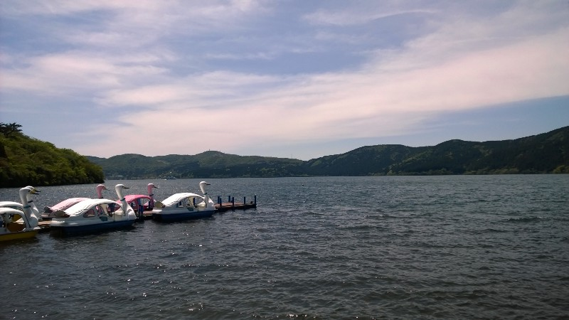Jumping again, this time to Hakone a week later. It really reminds me of some of New Zealand’s more beautiful places (Queenstown especially)
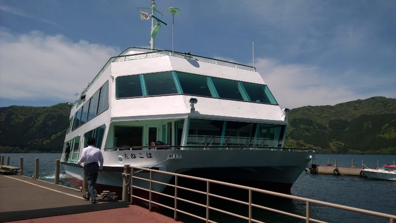Our ride arriving
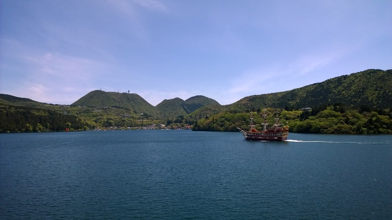They alsohave a mock galleon that sails around the lake for some reason …
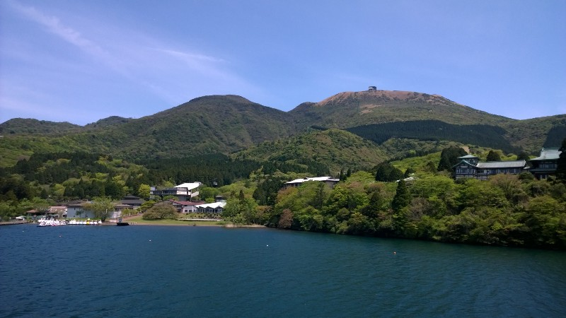But … but where are the skyscrapers? The hordes of people? Why is there so much of that fluffy-looking green stuff everywhere?
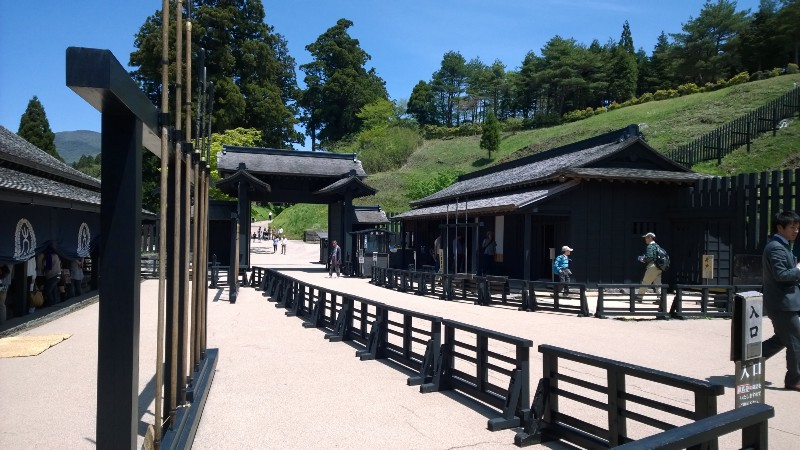A Tokugawa-era samurai villa, restored and made into a museum. This is the side of Japan I came to see
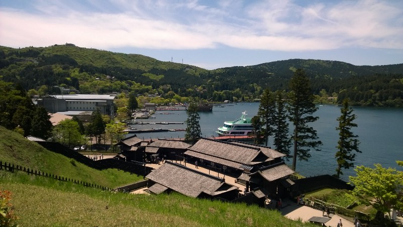Photoshopping out that boat would make things look so much nicer …
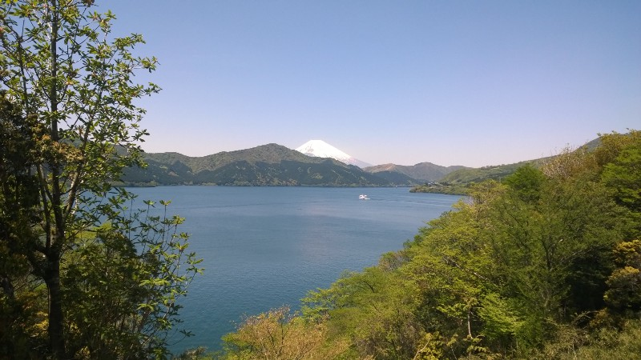Oh, did I mention you can see Mt Fuji?
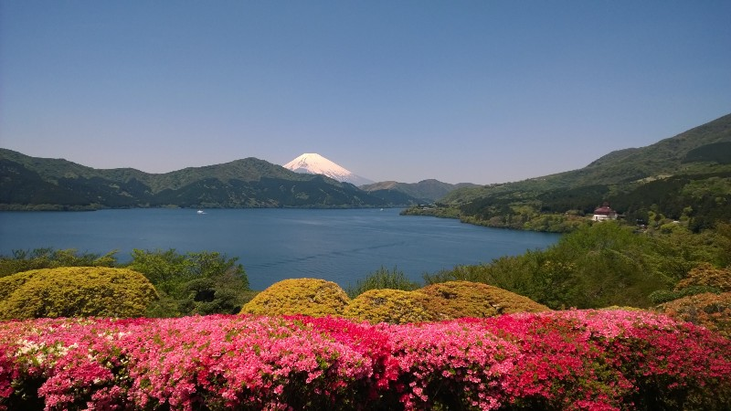And did I mention how stunning it is?
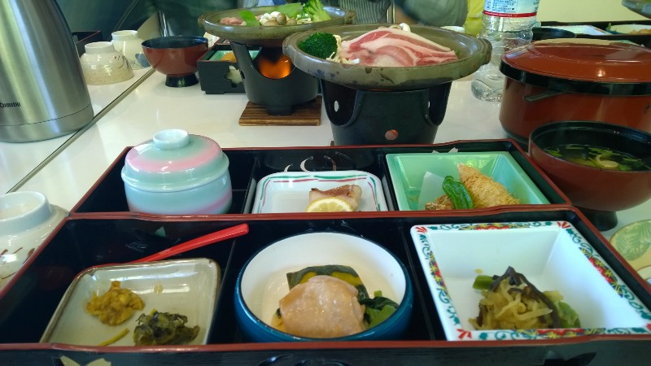I still can’t believe this trip was free! Thanks Gakushuin!
That’s about all for now. Apologies if this didn’t flow as well as my other posts, I’m tired out from lack of sleep and constant Aikido training (which I’ll get to in my next article!)
Just one final thing: If someone could tell me the name of this flower I’d be grateful! I’ve never seen it before and it’s purty.
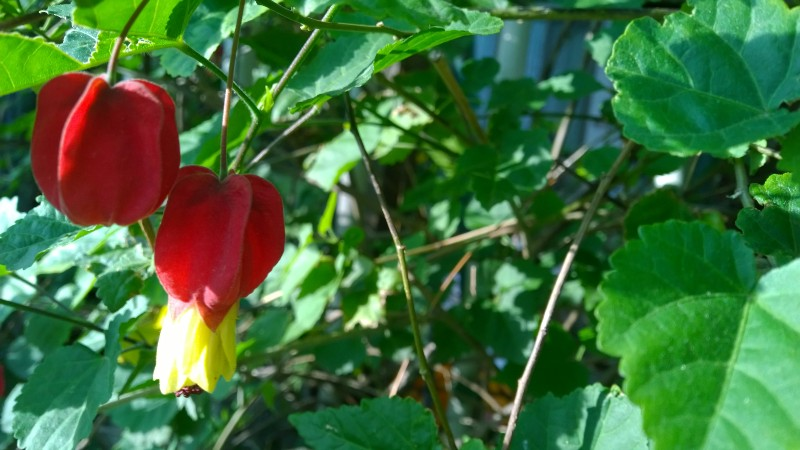
Weird things (note these are more subjective and theoretical than sometimes — this is just what I’ve heard and inferred)
- Aside from what I said about work at the start of the article, I’ve heard a lot about how Japanese companies expect to take students fresh out of university and keep them for 40+ years. This means that if you want a good job, the university holidays are the last long holidays you’re likely to get until retirement, and it puts massive pressure on fourth-year students to find a company they’ll be happy with for their entire working life
- Japanese companies tend not to worry about what sort of a degree you have as long as you have a degree — they just expect to spend a few months training you when you arrive. In contrast to the last item, I think this is an awesome idea: students can study what they are interested in without worrying about whether it’ll make them employable
- Tokyo is quite a small city given how many people are there. Driving across my home town of Christchurch takes the best part of an hour, but driving across Tokyo only takes a couple of hours even though it has 20-30 times the population